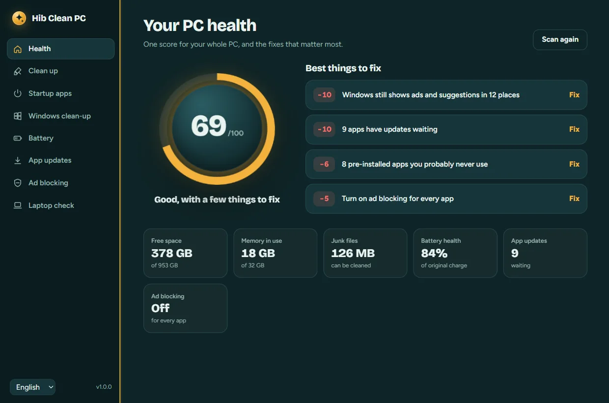
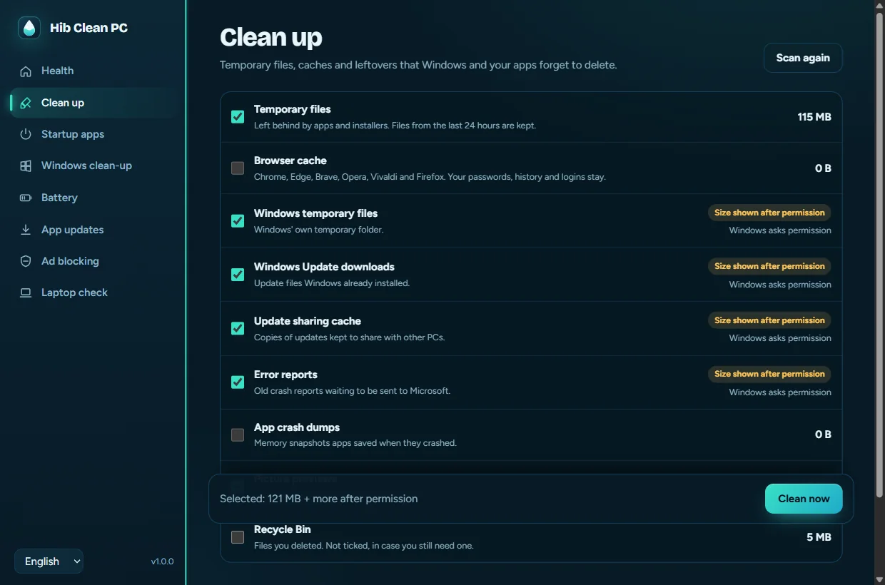
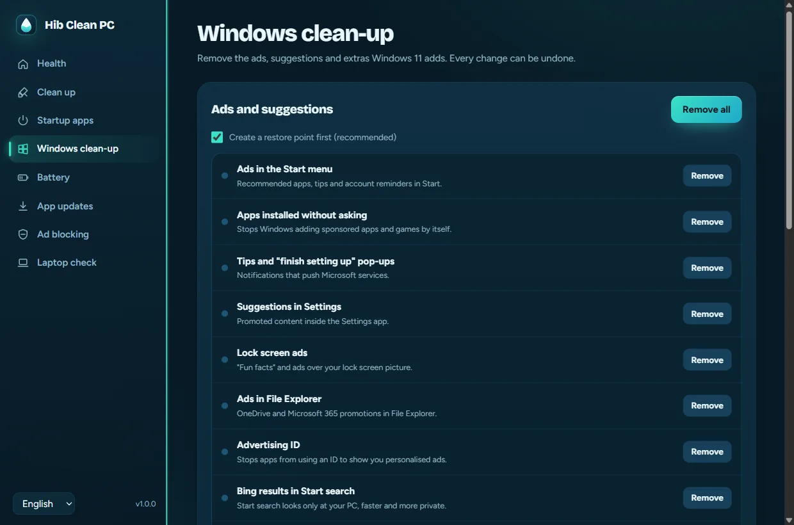
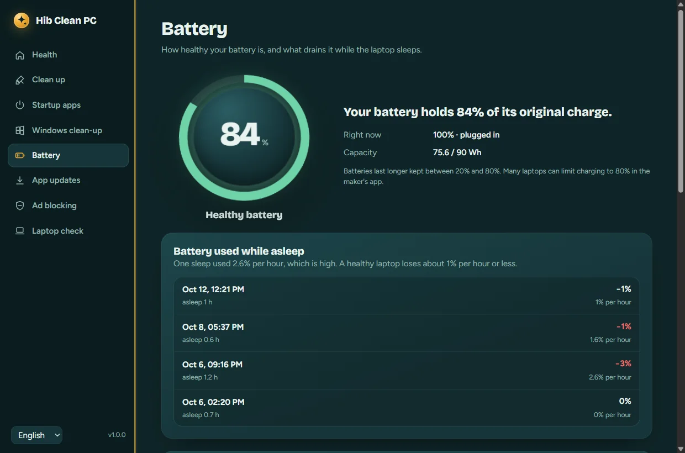
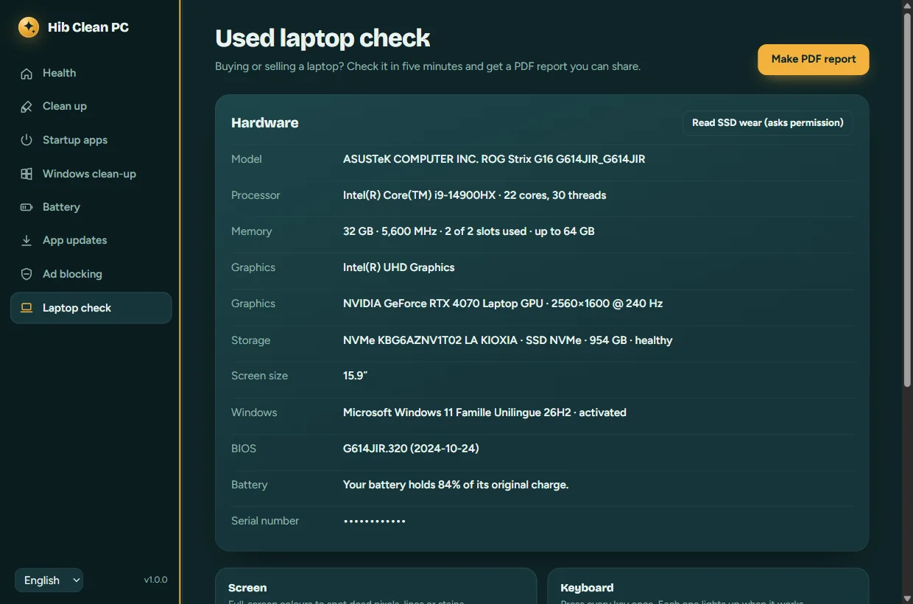

Your PC, cleaned up and explained.
Hib Clean PC gives your Windows PC one health score, then fixes what matters: junk files, slow startup, Windows ads, app updates and ads in every app. It also tells you how your battery is really doing. Free and open source.
irm https://zakariahibaoui2.github.io/hib-clean-pc/install.ps1 | iexPaste it in PowerShell (Windows key, type powershell, Enter). It installs to your user folder with Start menu and Desktop shortcuts. No administrator rights needed.

Eight tools in one free app
Each one is a short script you can read on GitHub. In English, French and Arabic.




Careful with your PC
A clean-up app has to be trusted. This is how Hib Clean PC earns it.
Questions
Is it really free?
Yes. There's no paid version, no account and no ads. The code is on GitHub under the GPL-3.0 license.
Windows says "Windows protected your PC"
That appears for apps without a paid signing certificate when you download the .exe. Use the one-line install above to avoid it, or click More info, then Run anyway.
Will cleaning delete my files?
No. It only cleans caches and temporary files that apps and Windows recreate. Your documents, photos, passwords and browser history stay. The Recycle Bin is only emptied if you tick it.
How do I uninstall it?
Settings → Apps → Installed apps → Hib Clean PC → Uninstall. Changes it made can be undone from the app first.
Does ad blocking work on school or work Wi-Fi?
Some school and work networks, and VPNs, force their own DNS. There it may not apply. You can switch back to Automatic anytime.